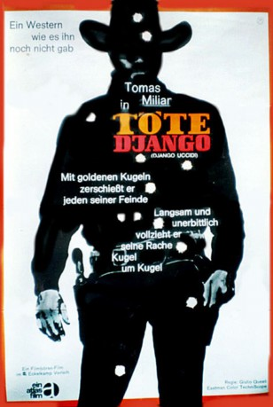

#3325 Django - Leck Staub von meinem Colt
Alternativ: Django Kill... If You Live, Shoot! (Englischer Titel)
 
 IMDB-Wertung: 6.5 / 10
IMDB-Wertung: 6.5 / 10  Metascore: 0
Metascore: 0 
Zusammen mit einigen Banditen führt Django einen lukrativen Überfall aus. Doch die Anführer der Bande entpuppen sich als miese Betrüger und töten rücksichtslos alle ihrer Helfer. Django überlebt schwerverletzt. Unterdessen werden die Banditen ihrerseits in einer nahegelegenen Stadt umgebracht und ausgeraubt. Als dann auch Django in die Stadt kommt, ist Ärger vorprogrammiert, denn dort will jeder das Gold...
Jahr: 1967
Dauer: 116 Minuten
FSK: 18
Land: Italien Studio: Eckelkamp VerleihTonspuren: DD2.0 - ,
Untertitel: Deutsch, Englisch,
Auflösung: 1080p (1920x792) Größe: 10342 MB
Genre: Action, Western
Regisseur: Giulio Questi
Drehbuch: Franco Arcalli, Giulio Questi, María del Carmen Martínez Román, Benedetto Benedetti
Soundtrack: Ivan Vandor
Darsteller:
 Tomas Milian als The Stranger
Tomas Milian als The Stranger Sancho Gracia als Willy
Sancho Gracia als Willy- Antonio Pica als Tembler's henchman , uncredited
- Marilù Tolo als Lori
- Piero Lulli als Oaks
- Milo Quesada als Bill Templer
- Miguel Serrano als Indian
- Francisco Sanz als Hagerman
- Ángel Silva als Indian
- Mirella Pamphili als Woman in Town
- Ray Lovelock als Evan
- Roberto Camardiel als Mr. Sorrow
- Patrizia Valturri als Elizabeth Hagerman
- Calogero Azzaretto als Uomo di Sorrow , uncredited
 Frank Braña als Tembler's henchman , uncredited
Frank Braña als Tembler's henchman , uncredited- Sisto Brunetti als Sorrow henchman , uncredited
- Ann Collin als Lori , singing voice, uncredited
- Gene Collins als Collins , uncredited
- Eduardo de Santis als (uncredited
- Rafael Hernández als Richie , uncredited
- Herman Reynoso als Bearded townsman , uncredited
- Tony Russel als Mr. Sorrow , uncredited
- Fernando Villena als Oaks gang member , uncredited
Datei: X:\HD-Western-Collections\Django\Django - Leck Staub von meinem Colt (1967, FSK18, 1920x792).mkv seit 11.03.2016
Festplatte: HD Eastern+Western
 Es gibt insgesamt 10 Filme in der Gruppe 'HD-Western-Collections\Django'
Es gibt insgesamt 10 Filme in der Gruppe 'HD-Western-Collections\Django'